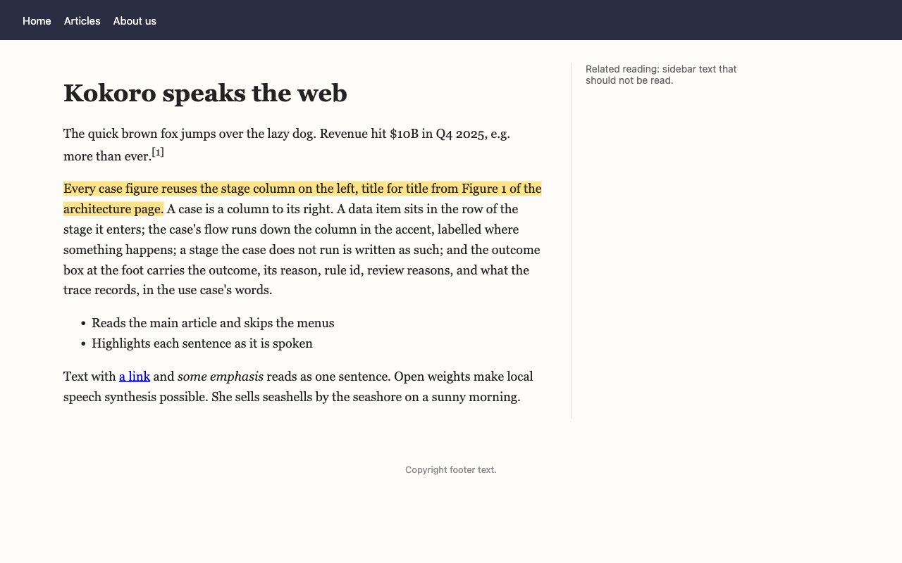
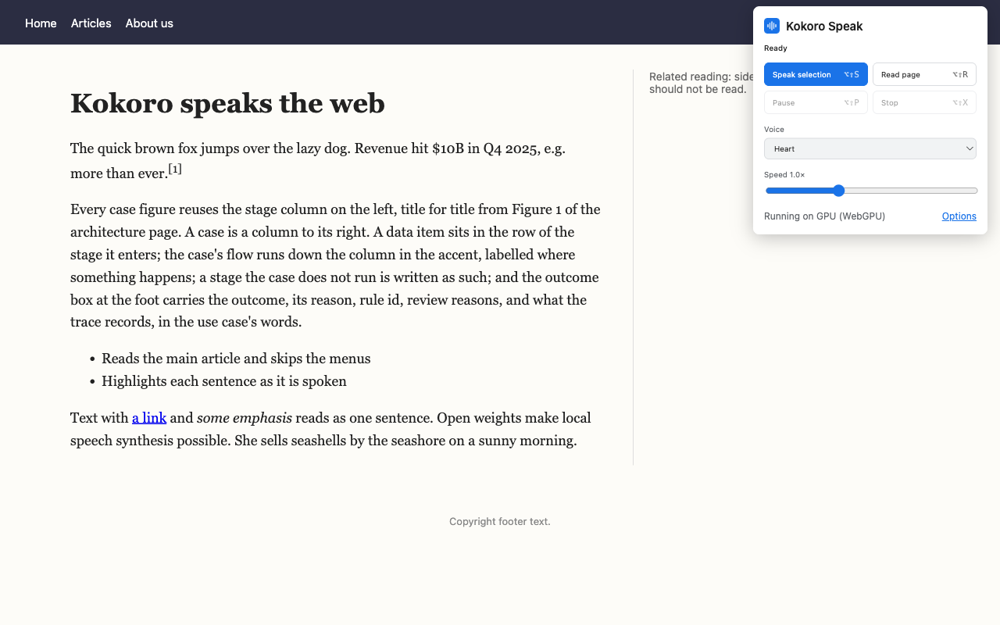

Read the web aloud,
sentence by sentence.
Kokoro Speak reads web pages and selected text in a natural, human-sounding voice, and highlights each sentence as it's spoken so you can follow along. It runs on your own computer: private, no account, and it works offline.

What it does
Select some text and press Alt+Shift+S, or read a whole article with Alt+Shift+R.
Selections or whole articles
Speak what you've selected, or read a page's main article and skip the menus, sidebars and footers.
Follow along
The sentence being spoken is highlighted on the page and kept in view.
28 voices
American and British English, at any speed from 0.5× to 2×.
Private and offline
The Kokoro-82M speech model is included and runs on your graphics card, or on the processor when there isn't one. Nothing is sent to a server.
Numbers read naturally
"$10B" is read as "10 billion dollars" and "Q4 2025" as "fourth quarter 2025". Add your own pronunciations, and acronyms to spell out.
Optional AI rewriting
For text the built-in rules don't cover, with your own Anthropic API key. It's off by default, and it's the only feature that sends text off your device.
Controls where you need them
Use the toolbar button, the right-click menu or the keyboard. Change the shortcuts at chrome://extensions/shortcuts.
| Alt+Shift+S | Speak the selection |
| Alt+Shift+R | Read the page |
| Alt+Shift+P | Pause or resume |
| Alt+Shift+X | Stop |
On a Mac, Alt is the Option key (⌥).
